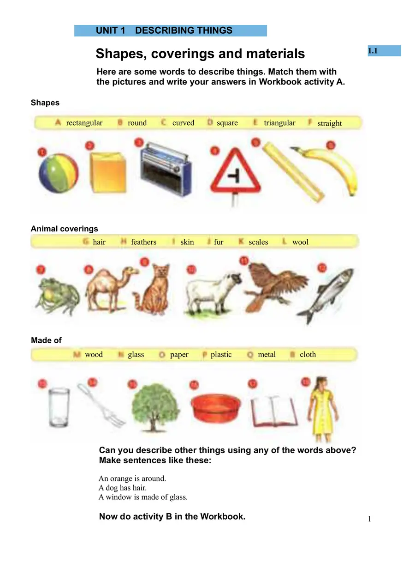

UNIT 1 DESCRIBING THINGS 1.1 Shapes, coverings and materials Here are some words to describe things. Match them with the pictures and write your answers in Workbook activity A.
Shapes A rectangular · B round · C curved · D square · E triangular · F straight
Animal coverings G hair · H feathers · I skin · J fur · K scales · L wool
Made of M wood · N glass · O paper · P plastic · Q metal · R cloth
Can you describe other things using any of the words above? Make sentences like these: An orange is around. A dog has hair. A window is made of glass. Now do activity B in the Workbook.
around (حول) في المثال الأول في الكتاب المطبوع «An orange is around.»، والمقصود علمياً صفة الشكل round (دائري/كروي) المذكورة في جدول Shapes أعلاه؛ وقد أُبقي نص الكتاب حرفياً التزاماً بأمانة النقل وسُجّلت الملاحظة في REVIEW_NEEDED.md.[
{
"letter": "A",
"word": "rectangular",
"ar": "مستطيل",
"answer": "3"
},
{
"letter": "B",
"word": "round",
"ar": "دائري",
"answer": "1"
},
{
"letter": "C",
"word": "curved",
"ar": "منحنٍ",
"answer": "6"
},
{
"letter": "D",
"word": "square",
"ar": "مربع",
"answer": "2"
},
{
"letter": "E",
"word": "triangular",
"ar": "مثلث",
"answer": "4"
},
{
"letter": "F",
"word": "straight",
"ar": "مستقيم",
"answer": "5"
},
{
"letter": "G",
"word": "hair",
"ar": "شعر/وبر",
"answer": "8"
},
{
"letter": "H",
"word": "feathers",
"ar": "ريش",
"answer": "11"
},
{
"letter": "I",
"word": "skin",
"ar": "جلد",
"answer": "7"
},
{
"letter": "J",
"word": "fur",
"ar": "فراء",
"answer": "9"
},
{
"letter": "K",
"word": "scales",
"ar": "حراشف",
"answer": "12"
},
{
"letter": "L",
"word": "wool",
"ar": "صوف",
"answer": "10"
},
{
"letter": "M",
"word": "wood",
"ar": "خشب",
"answer": "15"
},
{
"letter": "N",
"word": "glass",
"ar": "زجاج",
"answer": "13"
},
{
"letter": "O",
"word": "paper",
"ar": "ورق",
"answer": "17"
},
{
"letter": "P",
"word": "plastic",
"ar": "بلاستيك",
"answer": "16"
},
{
"letter": "Q",
"word": "metal",
"ar": "معدن",
"answer": "14"
},
{
"letter": "R",
"word": "cloth",
"ar": "قماش",
"answer": "18"
}
][
{
"num": 1,
"prompt": "Aisha's hair is long, ______ and black.",
"answers": [
"straight"
]
},
{
"num": 2,
"prompt": "A djambia has a ______ blade.",
"answers": [
"curved"
]
},
{
"num": 3,
"prompt": "Many team sports use a ______ ball.",
"answers": [
"round"
]
},
{
"num": 4,
"prompt": "If you look around a room, you will see many ______ objects, for example, doors, windows, tables, books and shelves.",
"answers": [
"rectangular"
]
},
{
"num": 5,
"prompt": "You have to remove the ______ of a fish before you cook it.",
"answers": [
"scales"
]
},
{
"num": 6,
"prompt": "We can study the ______ of birds to understand how they fly.",
"answers": [
"feathers"
]
},
{
"num": 7,
"prompt": "Some animals, such as cats, are covered in ______, while other animals, such as camels, are covered in ______.",
"answers": [
"fur",
"hair"
]
},
{
"num": 8,
"prompt": "Windows are usually made of wood and ______, but sometimes ______ or plastic is used instead of wood.",
"answers": [
"glass",
"metal"
]
},
{
"num": 9,
"prompt": "Newspapers, magazines and books are all made of ______.",
"answers": [
"paper"
]
},
{
"num": 10,
"prompt": "You should be careful when leaving things made of ______ in a hot car. Objects such as music cassettes can be easily damaged.",
"answers": [
"plastic"
]
}
]{
"pb_text_vs_image": "طُوبق النص المستخرج بـ pdftotext مع صورة PDF ص 3 (كتاب ص 1) بـ 250 DPI عبر 3 شرائح أفقية. الترتيب سليم تماماً، ورُصد الخطأ المطبعي الموجود في الكتاب ذاته \"An orange is around.\".",
"wb_ocr_vs_image": "قُورن المحتوى بمخرجات tesseract.js eng على صورة wb-002.png: صحّحنا أخطاء OCR في علامات الصناديق المفرغة (Ald [J -> boxes A..R) ورقم الدرس (11 -> 1.1)، وثُبّتت الجمل العشر بالكامل حرفياً."
}